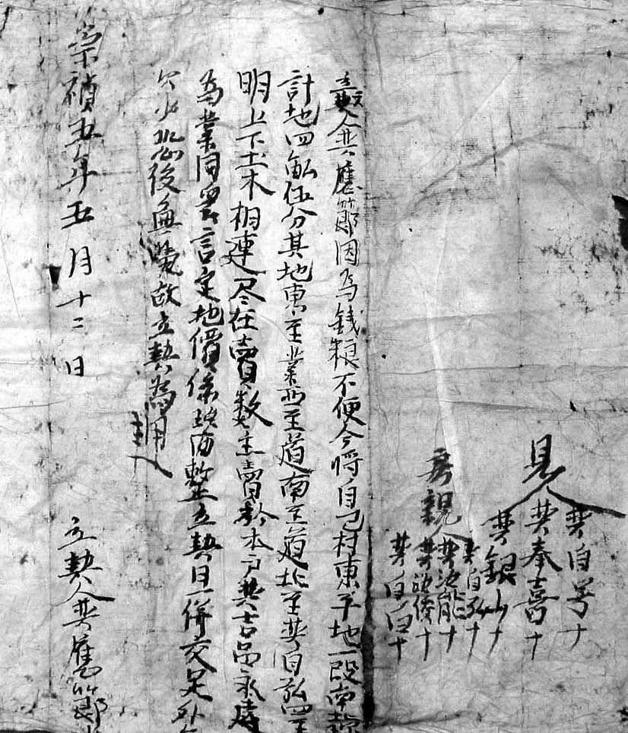
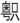

十二
乙酉年五月十四日忻城伯、京营戎政总督赵之龙缒城而出，递降表于豫王多铎；次日，大开洪武门恭请多铎入南京。以此为标志，弘光政权结束。同时意味着，明朝作为全国性政权从“国家”意义上消失。
这也是南京首次以中国首都的地位，为外国军队所占领。
在这背景下，发生了既令人震惊又耐人寻味的场景：五月二十五日，弘光皇帝朱由崧被押回，当他所乘小轿穿行于南京街道时，“夹路百姓唾骂，有投瓦砾者”。[162]这是在外国占领军的注视下，百姓对自己的前国家元首做出的举动。南京人民不欢迎满清占领，但是，他们仍然明确表达了对明朝的唾弃。这是两个单独的问题，它们并不矛盾。
我们也记得，崇祯末年，北京市民有“只图今日，不过明朝”的民谚，用一语双关方式，曲折道出对“明朝”的厌倦。
明朝百姓没有感觉到幸福。他们认为在这样一个社会里，自己受到了过于严重的剥夺。我们耗数万言，细针密缕，罗列和爬梳种种数字，都是为此提供一些实证。
约翰·罗尔斯说：
一个正义制度必须形成自我支持的力量。这意味着它必须这样被安排：使它的社会成员产生相应的正义感，以及为了正义的理由而按照它的规范行动的有效欲望。[163]
一个组织良好的社会是一个被设计来发展它的成员们的善并由一个公开的正义观念有效地调节着的社会。因而，它是一个这样的社会，其中每一个人都接受并了解其他人也接受同样的正义原则，同时，基本的社会制度满足着并且也被看做是满足着这些正义原则。[164]
他强调制度设计问题，认为制度是否形成支撑，并非从外部征集和寻求而来，而在于要让正义原则预置于制度内部；只要做到这一点，无须号召和鼓动，社会成员自然能够主动和由衷地拥戴、热爱这一制度。
他还探讨了制度间的竞争：
一个正义观念，假如它倾向于产生的正义感较之另一个正义观念更强烈，更能制服破坏性倾向，并且它所容许的制度产生着更弱的不公正行动的冲动和诱惑，它就比后者具有更大的稳定性。[165]
中国古代社会，不缺乏正义的理念，只是缺乏将理念转化为制度设计的能力。儒家思想体系，虽然尊崇君权，但并不一味充当君权的驯服工具，它的“民本”原则，在古代世界各政治、伦理思想体系中，具相当的先进性。正因此，每当朝代更迭之际，新的统治者都不得不推出若干惠民政策，作为与民更始的表示。
但是，儒家思想体系终究不能前进一步，从理念拓展到制度建设。重“道”轻“器”，止于明道、论道而不辅之以形而下制度层面的精确设计，是吾国文明一大弱项。以为有好的理念，就会有好的现实。这使得儒家伦理最后往往陷于空谈，那些正派、正统的儒家官僚，能够在言论上发表极好的见解，却无法转化、落实于有效的政治实践。
二千多年，中国所以在王朝周期性震荡中徘徊，根子就是不能突破制度瓶颈。由于未从制度上解决问题，便只好通过旧朝烂透、再换新朝的办法加以缓解，如此循环往复、故伎重演。人民所能指望的，无非是“多行不义必自毙，子姑待之”，苦苦等待当朝贪饱吸足、自取灭亡，然后借着新朝新气象，过上几天好日子。这种节奏从未改变。1644—1645年之间，中国也是如此。

崇祯年间卖地地契。
晚明赋税益重，拥有土地往往成为很大负担，而时有卖地以求摆脱者。这份崇祯五年五月十二日所立地契，即写明卖地人“因为钱粮不便”将名下四亩五分地卖与同族者。
[1] 《袁宏道集笺校》，上海古籍出版社，1981，第219—220页。
[2] 严从简《殊域周咨录》，二十四卷，女直，中华书局，2000，第743—744页。
[3] 弗兰克《白银资本》，中央编译出版社，2000，第182页。
[4] 《胡适书信集》上册，北京大学出版社，1996，第226页。
[5] 朱熹《四书章句集注》论语集注卷三公冶长第五，中华书局，1983，第77页。
[6] 郑玄注、贾公彦疏《十三经注疏·周礼注疏》上册卷第十一，北京大学出版社，1999，第279页。
[7] 《十三经注疏·春秋左传正义》卷第二十四宣公十三年至十八年，北京大学出版社，1999，第664页。
[8] 《十三经注疏·春秋左传正义》卷第二十四宣公十三年至十八年，北京大学出版社，1999，第664页。
[9] 朱熹《四书章句集注》论语集注卷三公冶长第五，中华书局，1983，第135页。
[10] 余冠英注译《诗经选》，人民文学出版社，1985，第238—239页。
[11] 《十三经注疏·春秋左传正义》卷第二十四宣公十三年至十八年，北京大学出版社，1999，第664页。
[12] 《十三经注疏·春秋左传正义》卷第二十四宣公十三年至十八年，北京大学出版社，1999，第672页。
[13] 《胡适书信集》上册，北京大学出版社，1996，第226页。
[14] 余冠英注译《诗经选》，人民文学出版社，1985，第242页。
[15] 朱熹《四书章句集注》孟子集注卷五滕文公章句上，中华书局，1983，第256页。
[16] 《十三经注疏·春秋左传正义》卷第二十四宣公十三年至十八年，北京大学出版社，1999，第665页。
[17] 黄宗羲《明夷待访录》，《黄宗羲全集》第一册，浙江古籍出版社，1985，第24页。
[18] 黄宗羲《明夷待访录》，《黄宗羲全集》第一册，浙江古籍出版社，1985，第23页。
[19] 黄宗羲《明夷待访录》，《黄宗羲全集》第一册，浙江古籍出版社，1985，第24页。
[20] 黄宗羲《明夷待访录》，《黄宗羲全集》第一册，浙江古籍出版社，1985，第24页。
[21] 王世贞撰、董复表辑《弇州史料》前集卷十七，万历二十五年刻本，广东省立中山图书馆缩微品，1988。
[22] 张廷玉等《明史》卷十七，中华书局，1974，第215页。
[23] 张廷玉等《明史》卷九十五，中华书局，1974，第2336页。
[24] 王世贞撰、董复表辑《弇州史料》前集卷十七，万历二十五年刻本，广东省立中山图书馆缩微品，1988。
[25] 原文：“户口之数，增减不一，其可考者，洪武二十六年，天下户一千六十五万二千八百七十，口六千五十四万五千八百十二。弘治四年，户九百十一万三千四百四十六，口五千三百二十八万一千一百五十八。万历六年，户一千六十二万一千四百三十六，口六千六十九万二千八百五十六。”张廷玉等《明史》卷七十七，中华书局，1974，第1880—1881页。
[26] 张廷玉等《明史》卷一百十六，中华书局，1974，第3557页。
[27] 《明穆宗实录》卷五八，国立北平图书馆红格钞本影印本，1962，第1424页。
[28] 王世贞《弇山堂别集》卷六十七，台湾学生书局影印本，1965，第2853页。
[29] 张廷玉等《明史》卷七十八，中华书局，1974，第1897—1898页。
[30] 明代白银价格本身及与粮食之间的折算率，前后变化极大。这里是以嘉靖间价格为准，来源于秦佩珩《明代米价考》一文，见其《明清社会经济史论稿》第199—210页，中州古籍出版社，1984。
[31] 张廷玉等《明史》卷七十七，中华书局，1974，第1882页。
[32] 张廷玉等《明史》卷七十七，中华书局，1974，第1882页。
[33] 张廷玉等《明史》卷七十七，中华书局，1974，第1882页。
[34] 张廷玉等《明史》卷七十七，中华书局，1974，第1885页。
[35] 张廷玉等《明史》卷七十八，中华书局，1974，第1898页。
[36] 吴应箕《真阳驿与汝宁守王乾纯先生书》，《楼山堂集》第十四卷，中华书局，1985，第160页。
[37] 张廷玉等《明史》卷七十八，中华书局，1974，第1901页。
[38] 张廷玉等《明史》卷七十八，中华书局，1974，第1903页。
[39] “时内帑充积，帝靳不肯发。”张廷玉等《明史》卷七十八，中华书局，1974，第1903页。
[40] 张廷玉等《明史》卷七十八，中华书局，1974，第1903页。
[41] 张廷玉等《明史》卷二百五十二，中华书局，1974，第6510页。
[42] 张廷玉等《明史》卷二百五十二，中华书局，1974，第6515页。
[43] 张廷玉等《明史》卷二百五十二，中华书局，1974，第6515页。
[44] 张廷玉等《明史》卷二百五十二，中华书局，1974，第6515页。
[45] 御史卫周胤语。张廷玉等《明史》卷七十八，中华书局，1974，第1904页。
[46] 张廷玉等《明史》卷二百五十九，中华书局，1974，第6714页。
[47] 计六奇《明季北略》宁远军哗，中华书局，1984，第94页。
[48] 计六奇《明季北略》锦州军哗，中华书局，1984，第94—95页。
[49] 彭孙贻《平寇志》卷之六，上海古籍出版社，1984，第135页。
[50] 抱阳生《甲申朝事小纪》下册李知遇请发秦督疏请拨饷接济疏，书目文献出版社，1987，第734—735页。
[51] 赵士锦《甲申纪事》，《甲申纪事（外三种）》，中华书局，1959，第6页。
[52] 刘尚友《定思小纪》，《甲申核真略（外二种）》，浙江古籍出版社，1985，第66页。
[53] 刘尚友《定思小纪》，《甲申核真略（外二种）》，浙江古籍出版社，1985，第67页。
[54] 赵士锦《甲申纪事》，《甲申纪事（外三种）》，中华书局，1959，第7页。
[55] 赵士锦《北归记》，《甲申纪事（外三种）》，中华书局，1959，第21页。
[56] 钱《甲申传信录》，上海书店，1982，第7页。
[57] 彭孙贻《平寇志》卷之八，上海古籍出版社，1984，第172页。
[58] 抱阳生《甲申朝事小纪》下册崇祯库藏，书目文献出版社，1987，第512页。
[59] 张廷玉等《明史》卷七十九，中华书局，1974，第1928页。
[60] 赵士锦《甲申纪事》，《甲申纪事（外三种）》，中华书局，1959，第7页。
[61] 抱阳生《甲申朝事小纪》下册崇祯库藏，书目文献出版社，1987，第512页。
[62] 杨士聪《甲申核真略》凡论，《甲申核真略（外二种）》，浙江古籍出版社，1985，第7页。
[63] 此处都仅指北京米价，至于别地，崇祯初即可高至每石值银四两。参秦佩珩《明代米价考》，《明清社会经济史论稿》第199—210页，中州古籍出版社，1984。
[64] 顾公燮《丹午笔记》：“前明，京师钱价，纹银一两，买钱六百，其贵贱在另数。至崇祯十六年，竟卖至二千矣。”《丹午笔记·吴城日记·五石脂》，江苏古籍出版社，1999，第64页。
[65] 《再见穆巴拉克》，“深度国际”，CCTV4，2011年5月27日。
[66] 彭孙贻《平寇志》卷之八，上海古籍出版社，1984，第173页。
[67] 钱《甲申传信录》，上海书店，1982，第11页。
[68] 计六奇《明季北略》初十征戚珰助饷，中华书局，1984，第445页。
[69] 计六奇《明季北略》初十征戚珰助饷，中华书局，1984，第445—446页。
[70] 抱阳生《甲申朝事小纪》上册征戚助饷，书目文献出版社，1987，第152页。
[71] 钱《甲申传信录》，上海书店，1982，第12页。
[72] 计六奇《明季北略》四月三十日自成西奔，中华书局，1984，第491页。
[73] 赵士锦《甲申纪事》，《甲申纪事（外三种）》，中华书局，1959，第13页。
[74] 赵士锦《甲申纪事》，《甲申纪事（外三种）》，中华书局，1959，第14页。
[75] 赵士锦《甲申纪事》，《甲申纪事（外三种）》，中华书局，1959，第12页。
[76] 赵士锦《甲申纪事》，《甲申纪事（外三种）》，中华书局，1959，第12页。
[77] 彭孙贻《平寇志》卷之十，上海古籍出版社，1984，第228页。并见《甲申纪事》，《甲申纪事（外三种）》，中华书局，1959，第12页。
[78] 彭孙贻《平寇志》卷之九，上海古籍出版社，1984，第220页。
[79] 彭孙贻《平寇志》卷之十，上海古籍出版社，1984，第237页。
[80] 彭孙贻《平寇志》卷之十，上海古籍出版社，1984，第225页。
[81] 彭孙贻《平寇志》卷之十，上海古籍出版社，1984，第225页。
[82] 杨士聪《甲申核真略》，《甲申核真略（外二种）》，浙江古籍出版社，1985，第12页。
[83] 彭孙贻《平寇志》卷之十，上海古籍出版社，1984，第239页。
[84] 计六奇《明季北略》十六癸酉载金入秦，中华书局，1984，第488页。
[85] 彭孙贻《平寇志》卷之十，上海古籍出版社，1984，第241页。
[86] 顾公燮《丹午笔记》，李闯西走，《丹午笔记·吴城日记·五石脂》，江苏古籍出版社，1999，第43页。
[87] 李清《三垣笔记》，中华书局，1997，第251页。
[88] 仓修良、魏得良《点校说明》，《爝火录》，浙江古籍出版社，1986，第1—3页。
[89] 李天根《爝火录》，浙江古籍出版社，1986，第122页。
[90] 谈迁《国榷》，中华书局，2005，第6083页。
[91] 李天根《爝火录》，浙江古籍出版社，1986，第122页。
[92] 李天根《爝火录》，浙江古籍出版社，1986，第122页。
[93] 李天根《爝火录》，浙江古籍出版社，1986，第122页。
[94] 此处参引鲍彦邦《明代白粮解运的方式与危害》，其于“白粮”问题研究深入，文载《暨南学报（哲学社会科学）》1982年第3期。
[95] 李天根《爝火录》，浙江古籍出版社，1986，第122页。
[96] 李天根《爝火录》，浙江古籍出版社，1986，第123页。
[97] 李天根《爝火录》，浙江古籍出版社，1986，第124页。附注：此段引文中“征解其正税，之外一切新加、私派、捐助等项”，点校者断为“征解其正税之外，一切新加、私派、捐助等项”，笔者以为不当而改之，特说明。
[98] 参叶向高《论本邑禁籴仓粮书》，陈梦雷等《古今图书集成》经济汇编食货典第一百一卷荒政部，中华书局，民国二十三年影印。
[99] 李天根《爝火录》，浙江古籍出版社，1986，第149页。
[100] 徐鼒《小腆纪年附考》，中华书局，2006，第35页。
[101] 计六奇《明季北略》北都崩解情景，中华书局，1984，第350页。
[102] 李清《三垣笔记》，中华书局，1997，第108—109页。
[103] 李清《南渡录》，《南明史料（八种）》，江苏古籍出版社，1999，第147页。
[104] 温睿临《南疆逸史》，中华书局，1959，第4页。
[105] 李天根《爝火录》，浙江古籍出版社，1986，第271页。
[106] 李天根《爝火录》，浙江古籍出版社，1986，第367页。
[107] 计六奇《明季南略》，中华书局，1984，第83—84页。
[108] 温睿临《南疆逸史》，中华书局，1959，第4页。
[109] 李清《三垣笔记》，中华书局，1997，第110页。
[110] 李天根《爝火录》，浙江古籍出版社，1986，第444页。
[111] 李清《三垣笔记》，中华书局，1997，第109页。
[112] 李天根《爝火录》，浙江古籍出版社，1986，第367页。
[113] 李天根《爝火录》，浙江古籍出版社，1986，第309页。
[114] 潘柽章《和陶乞食诗赠乞食诸君》，钱仲联主编《清诗纪事·明遗民卷》二，江苏古籍出版社，1987，第779页。
[115] 张廷玉等《明史》卷一百二十，中华书局，1974，第3649—3650页。
[116] 张廷玉等《明史》卷一百二十，中华书局，1974，第3650页。
[117] 谈迁《国榷》，中华书局，2005，第5072页。
[118] 史可法《请颁敕印给军需疏》，《史忠正公集》卷一，商务印书馆，民国二十五年，第4页。
[119] 李天根《爝火录》，浙江古籍出版社，1986，第202页。
[120] 李天根《爝火录》，浙江古籍出版社，1986，第400页。
[121] 李天根《爝火录》，浙江古籍出版社，1986，第419页。
[122] 李天根《爝火录》，浙江古籍出版社，1986，第345页。
[123] 李天根《爝火录》，浙江古籍出版社，1986，第375页。
[124] 李天根《爝火录》，浙江古籍出版社，1986，第346页。
[125] 李天根《爝火录》，浙江古籍出版社，1986，第361页。
[126] 计六奇《明季南略》，中华书局，1984，第98页。
[127] 计六奇《明季南略》，中华书局，1984，第98—99页。
[128] 计六奇《明季南略》，中华书局，1984，第99页。
[129] 李天根《爝火录》，浙江古籍出版社，1986，第395页。
[130] 李天根《爝火录》，浙江古籍出版社，1986，第396页。
[131] 李天根《爝火录》，浙江古籍出版社，1986，第243页。
[132] 李天根《爝火录》，浙江古籍出版社，1986，第344页。
[133] 李天根《爝火录》，浙江古籍出版社，1986，第345页。
[134] 李天根《爝火录》，浙江古籍出版社，1986，第443页。
[135] 文秉《甲乙事案》，《南明史料（八种）》，江苏古籍出版社，1999，第463—464页。
[136] 李天根《爝火录》，浙江古籍出版社，1986，第190页。
[137] 李天根《爝火录》，浙江古籍出版社，1986，第403页。
[138] 张廷玉等《明史》卷七十七，中华书局，1974，第1886—1889页。
[139] 彭孙贻《平寇志》，卷之八，上海古籍出版社，1984，第189页。
[140] 李清《三垣笔记》，中华书局，1997，第188页。
[141] 李清《三垣笔记》，中华书局，1997，第183页。
[142] 李清《三垣笔记》，中华书局，1997，第4页。
[143] 李清《三垣笔记》，中华书局，1997，第4页。
[144] 李清《三垣笔记》，中华书局，1997，第5页。
[145] 李天根《爝火录》，浙江古籍出版社，1986，第332页。
[146] 计六奇《明季南略》，中华书局，1984，第224页。
[147] 李天根《爝火录》，浙江古籍出版社，1986，第236页。
[148] 李天根《爝火录》，浙江古籍出版社，1986，第332页。
[149] 计六奇《明季南略》，中华书局，1984，第31页。
[150] 李天根《爝火录》，浙江古籍出版社，1986，第418页。
[151] 李天根《爝火录》，浙江古籍出版社，1986，第279页。
[152] 徐鼒《小腆纪年附考》，中华书局，2006，第369页。
[153] 李清《三垣笔记》，中华书局，1997，第108页。
[154] 李天根《爝火录》，浙江古籍出版社，1986，第372页。
[155] 李天根《爝火录》，浙江古籍出版社，1986，第237页。
[156] 李天根《爝火录》，浙江古籍出版社，1986，第366页。
[157] 计六奇《明季南略》，中华书局，1984，第214页。
[158] 计六奇《明季南略》，中华书局，1984，第216页。
[159] 计六奇《明季南略》，中华书局，1984，第214页。
[160] 李天根《爝火录》，浙江古籍出版社，1986，第476页。
[161] 李天根《爝火录》，浙江古籍出版社，1986，第366—367页。
[162] 计六奇《明季南略》，中华书局，1984，第224页。
[163] 约翰·罗尔斯《正义论》，中国社会科学出版社，1988，第252页。
[164] 约翰·罗尔斯《正义论》，中国社会科学出版社，1988，第440—441页。
[165] 约翰·罗尔斯《正义论》，中国社会科学出版社，1988，第441页。